摘要： 本文利用马或人的图片数据来训练模型，让模型经过训练后具备识别新的图片中是含有马或者人，从而达到自动识别（recognition）。
训练背景
数据集
下载地址：https://storage.googleapis.com/laurencemoroney-blog.appspot.com/horse-or-human.zip
说明：数据集包含了名为horse和human两个文件夹，包含了两种图片，分别是马和人的图片，每种图片大约500张，每个图片大小是300*300，每个像素的取值为3byte,即真彩色图片2的24次方的取值范围，图片如：
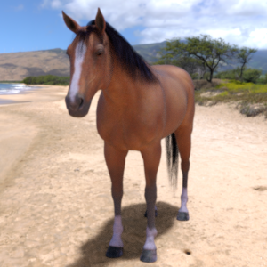
训练过程
通过使用马和人的图片来训练模型，让模型知道马是什么样子的，人是什么样子的，训练完成后，我们从晚上可以搜索新的马和人的照片，输入给模型，看看模型的预测结果。
数据准备过程
下载数据
可以使用wget 命令将数据下载至临时目录下
wget https://storage.googleapis.com/laurencemoroney-blog.appspot.com/horse-or-human.zip /tmp/horse-or-human.zip
windows系统可以直接使用浏览器下载并保存合适的位置。
解压数据
因为数据集是zip格式的压缩包，需要对其进行解压，所以要用到访问系统文件系统和解压程序，因此需要导入os和zipfile两个库
1
2
3
4
5
6
7
|
import os
import zipfile
#给出压缩包具体的路径，解压到horse-or-human目录下
local_zip = '/tmp/horse-or-human.zip'
zip_ref = zipfile.ZipFile(local_zip, 'r')
zip_ref.extractall('/tmp/horse-or-human')
zip_ref.close()
|
组织数据
在上述的数据中在horse-or-human文件夹中包含了horse、human两个子文件夹，但是每个子文件夹分别包含数百张horse或者human的图片，但是并针对于单个图片而言，并没有label信息，这一点是和其他数据集有不同的地方，如在fashion mnist数据集中，28*28的图片数据是T桖还是靴子，都已经在数据集中标记了。
所以，我们需要为该数据集标记label。ImageGenerator可以帮我们完成这个动作，ImageGenerator通过读取单个图片的文件名来标记图片是horse还是human(文件名都是以horse或human开头的)。
1
2
3
4
5
6
7
8
9
|
# horse图片数据 训练文件所在路径
train_horse_dir = os.path.join('/tmp/horse-or-human/horses')
# human图片数据 训练文件所在路径
train_human_dir = os.path.join('/tmp/horse-or-human/humans')
# 查看训练集中前十个图片数据的文件名
train_horse_names = os.listdir(train_horse_dir)
print(train_horse_names[:10])
train_human_names = os.listdir(train_human_dir)
print(train_human_names[:10])
|
#确认图片数据训练样本的文件名特性
[‘horse39-3.png’, ‘horse02-9.png’, ‘horse32-3.png’, ‘horse06-9.png’, ‘horse29-1.png’, ‘horse33-5.png’, ‘horse35-1.png’, ‘horse41-9.png’, ‘horse37-0.png’, ‘horse27-2.png’]
[‘human12-25.png’, ‘human15-10.png’, ‘human13-10.png’, ‘human16-26.png’, ‘human10-15.png’, ‘human08-14.png’, ‘human10-10.png’, ‘human04-13.png’, ‘human06-26.png’, ‘human16-09.png’]
1
2
3
|
#确认一下每种图片的数量
print('total training horse images:', len(os.listdir(train_horse_dir)))
print('total training human images:', len(os.listdir(train_human_dir)))
|
#打印结果，可以看到horse 500张，human 527张
total training horse images: 500
total training human images: 527
检查数据
为了更好的做好训练，必须要懂数据，反复地考虑如何使用数据特性、数据特征。我们可以直接去文件夹查看数据，也可以通过画图来显示数据。
1
2
3
4
5
6
7
8
9
10
11
12
13
14
15
16
17
18
19
20
21
22
23
24
25
26
27
28
29
30
31
32
|
#导入绘图所用到的库
import matplotlib.pyplot as plt
import matplotlib.image as mpimg
#使用一个4*4的画板
nrows = 4
ncols = 4
# 定义一个索引
pic_index = 0
# 初始化一个4*4大小的画布
fig = plt.gcf()
fig.set_size_inches(ncols * 4, nrows * 4)
pic_index += 8
horse和human图片的全路径
next_horse_pix = [os.path.join(train_horse_dir, fname)
for fname in train_horse_names[pic_index-8:pic_index]]
next_human_pix = [os.path.join(train_human_dir, fname)
for fname in train_human_names[pic_index-8:pic_index]]
#绘图
for i, img_path in enumerate(next_horse_pix+next_human_pix):
# Set up subplot; subplot indices start at 1
sp = plt.subplot(nrows, ncols, i + 1)
#不显示坐标轴
sp.axis('Off') # Don't show axes (or gridlines)
# 读取目录所对应的图片
img = mpimg.imread(img_path)
plt.imshow(img)
plt.show()
|
horse 和 human的样本数据如下图
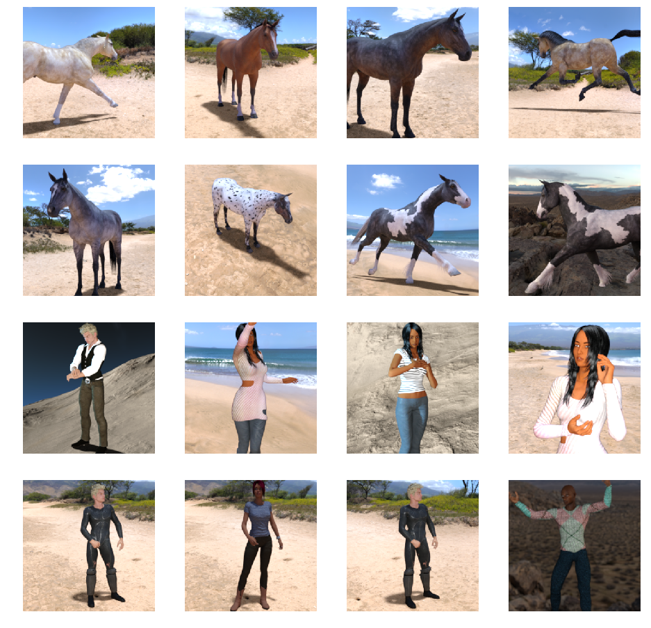
训练
定义模型
1
2
3
4
5
6
7
8
9
10
11
12
13
14
15
16
17
18
19
20
21
22
23
24
25
26
27
28
29
30
31
32
|
import tensorflow as tf
#使用序列化Sequential模型，使用卷积层
model = tf.keras.models.Sequential([
# 由于训练的图片数据的大小是300*300，且颜色取值3个字节，所以input_shape就
# 是（300，300，3）
# 激活函数使用relu，实现稀疏后的模型能够更好地挖掘相关特征，后面详细介绍
# 选择3*3大小滤镜（filter）去扫描图片数据
# 第一层卷积神经网络
tf.keras.layers.Conv2D(16, (3,3), activation='relu', input_shape=(300, 300, 3)),
# 使用MaxPooling2D 2*2的滤镜扫描，取得4个数值的最大值，目的是不损失特征的情况
#下压缩数据，还具有防止过拟合的作用
tf.keras.layers.MaxPooling2D(2, 2),
# 第二层卷积神经网络
tf.keras.layers.Conv2D(32, (3,3), activation='relu'),
tf.keras.layers.MaxPooling2D(2,2),
# 第三层卷积神经网络
tf.keras.layers.Conv2D(64, (3,3), activation='relu'),
tf.keras.layers.MaxPooling2D(2,2),
# 第四层卷积神经网络
tf.keras.layers.Conv2D(64, (3,3), activation='relu'),
tf.keras.layers.MaxPooling2D(2,2),
# 第五层卷积神经网络
tf.keras.layers.Conv2D(64, (3,3), activation='relu'),
tf.keras.layers.MaxPooling2D(2,2),
# 使得数据按照一定顺序规则成为1维数值或者向量，在喂给全连接的神经网络层
tf.keras.layers.Flatten(),
# 具有512个神经元的隐藏层
tf.keras.layers.Dense(512, activation='relu'),
# 只有一个用于输出的神经元，它的值将是0或者1,0代表horse,1代表human
tf.keras.layers.Dense(1, activation='sigmoid')
])
|
模型配置
1
2
3
4
5
6
7
|
from tensorflow.keras.optimizers import RMSprop
#由于是个二分类的问题，一般选用交叉熵代价函数或者损失函数
#学习速度（learning rate, lr）为0.001
#使用accuracy(acc)准确度来度量
model.compile(loss='binary_crossentropy',
optimizer=RMSprop(lr=0.001),
metrics=['acc'])
|
处理训练数据
给待训练的图片数据样本，使用上面介绍的ImageDataGenerator增加label，以便于模型进行训练。horse的label是0， human的label是1，并且为了便于计算，对图片数据进行归一化处理，也就是rescale。
1
2
3
4
5
6
7
8
9
10
11
|
from tensorflow.keras.preprocessing.image import ImageDataGenerator
# 所有图片像素点都被除以255，让数值回到0-1区间，便于计算
train_datagen = ImageDataGenerator(rescale=1/255)
# 使用train_datagen 产生 128批量的图片训练流
train_generator = train_datagen.flow_from_directory(
'/tmp/horse-or-human/', # 训练数据所在目录 images
target_size=(300, 300), #
batch_size=128, # 每次批量128个
# 由于使用交叉熵代价函数或者叫损失函数，是个二分类的问题
class_mode='binary')
|
训练
1
2
3
4
5
|
history = model.fit_generator(
train_generator,
steps_per_epoch=8,
epochs=15,
verbose=1)
|
训练结果如下:
Epoch 1⁄15
9⁄9 [==============================] - 8s 938ms/step - loss: 0.9263 - acc: 0.4985
Epoch 2⁄15
9⁄9 [==============================] - 7s 769ms/step - loss: 0.7288 - acc: 0.5696
Epoch 3⁄15
9⁄9 [==============================] - 8s 840ms/step - loss: 0.6819 - acc: 0.8189
Epoch 4⁄15
9⁄9 [==============================] - 7s 725ms/step - loss: 0.3804 - acc: 0.8296
Epoch 5⁄15
9⁄9 [==============================] - 7s 734ms/step - loss: 0.6457 - acc: 0.8179
Epoch 6⁄15
9⁄9 [==============================] - 7s 745ms/step - loss: 0.2520 - acc: 0.8812
Epoch 7⁄15
9⁄9 [==============================] - 7s 733ms/step - loss: 0.4631 - acc: 0.8345
Epoch 8⁄15
9⁄9 [==============================] - 7s 730ms/step - loss: 0.1801 - acc: 0.9241
Epoch 9⁄15
9⁄9 [==============================] - 7s 748ms/step - loss: 1.0966 - acc: 0.8549
Epoch 10⁄15
9⁄9 [==============================] - 7s 729ms/step - loss: 0.3123 - acc: 0.8919
Epoch 11⁄15
9⁄9 [==============================] - 7s 730ms/step - loss: 0.3674 - acc: 0.8744
Epoch 12⁄15
9⁄9 [==============================] - 7s 747ms/step - loss: 0.1424 - acc: 0.9494
Epoch 13⁄15
9⁄9 [==============================] - 7s 732ms/step - loss: 0.4181 - acc: 0.9182
Epoch 14⁄15
9⁄9 [==============================] - 8s 834ms/step - loss: 0.2235 - acc: 0.9289
Epoch 15⁄15
9⁄9 [==============================] - 8s 835ms/step - loss: 0.0485 - acc: 0.9796
可以看出，单从loss和acc上来看，效果还是很不错
使用模型
我们试图从网上随便找几个图片中含有马或者人的图片，输入给模型，看看模型能否识别正确。
1
2
3
4
5
6
7
8
9
10
11
12
13
14
15
16
17
18
19
20
21
22
|
import numpy as np
from google.colab import files
from keras.preprocessing import image
uploaded = files.upload()
for fn in uploaded.keys():
# predicting images
path = '/content/' + fn
img = image.load_img(path, target_size=(300, 300))
x = image.img_to_array(img)
x = np.expand_dims(x, axis=0)
images = np.vstack([x])
#预测
classes = model.predict(images, batch_size=10)
print(classes[0])
if classes[0]>0.5:
print(fn + " is a human")
else:
print(fn + " is a horse")
|
预测
我们使用上述的程序对以下来源于网络的五个图片进行预测，五个图片截图如下：
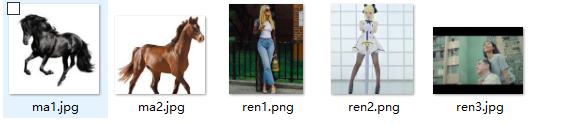
程序运行后，要求输入图片 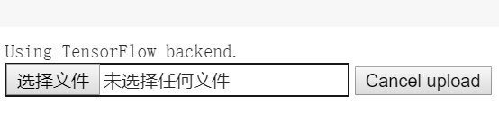
分别看看分别输入五个图片时的预测结果，如下所示
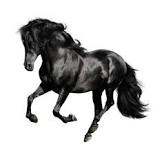 结果： ma1.jpg is a horse
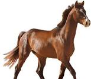 结果：ma2.jpg is a horse
结果：ren1.png is a human
结果: ren2.png is a human
结果: ren3.jpg is a horse
结果分析
图片预测时的结果截图
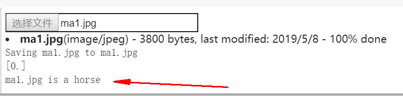
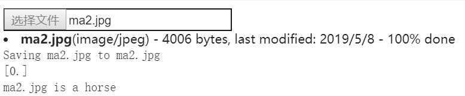
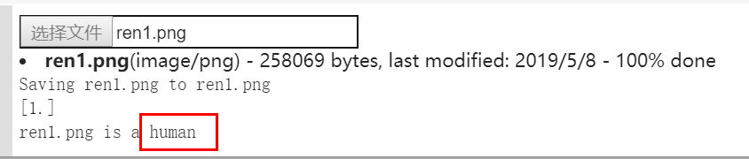
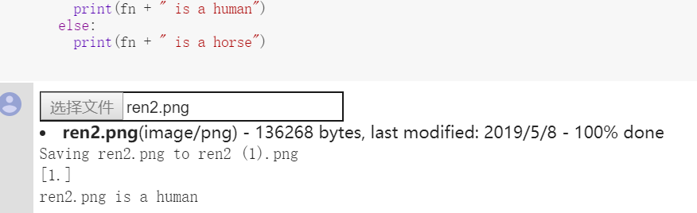
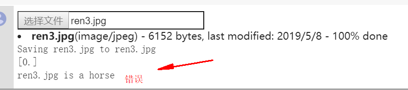